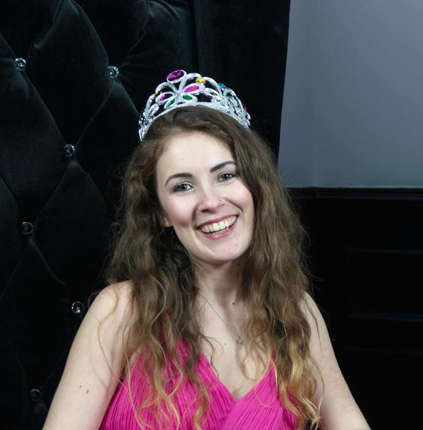

About Us
We've been working on the Code First: Girls beginner course this term, and this is our final project for the course competition! Read below to find out a little more about the creators and why we chose this website idea.
| about liv | |
|  | Hi! I'm Amy and I'm a third year Natural Scientist and Newnham, currently in my final year specialising in Pharmacology. I first made the change to a vegan diet in 2014, and though I've had a few stumbles along the way (and still hate tofu...) I've embraced the vegan diet and lifestyle at uni. I'm vegan for the animals, so I'm not big on raw veg and wholesome stews. My cupboard's stuffed with bourbon biscuits (yup, vegan!) and vegan chicken nuggets, so branching out to vegan puddings was only natural... I hope you enjoy our website and, if nothing else, it gets you thinking about veganism and trying something different in the kitchen. |